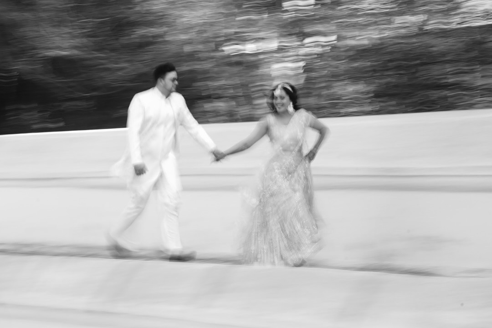
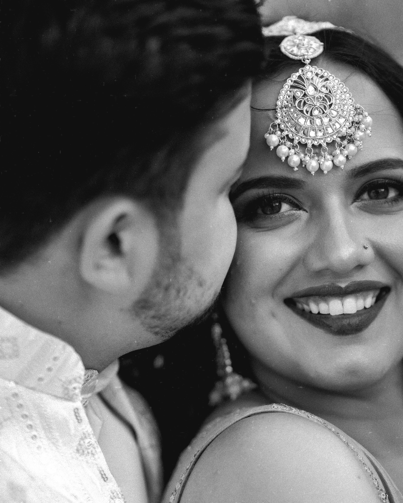
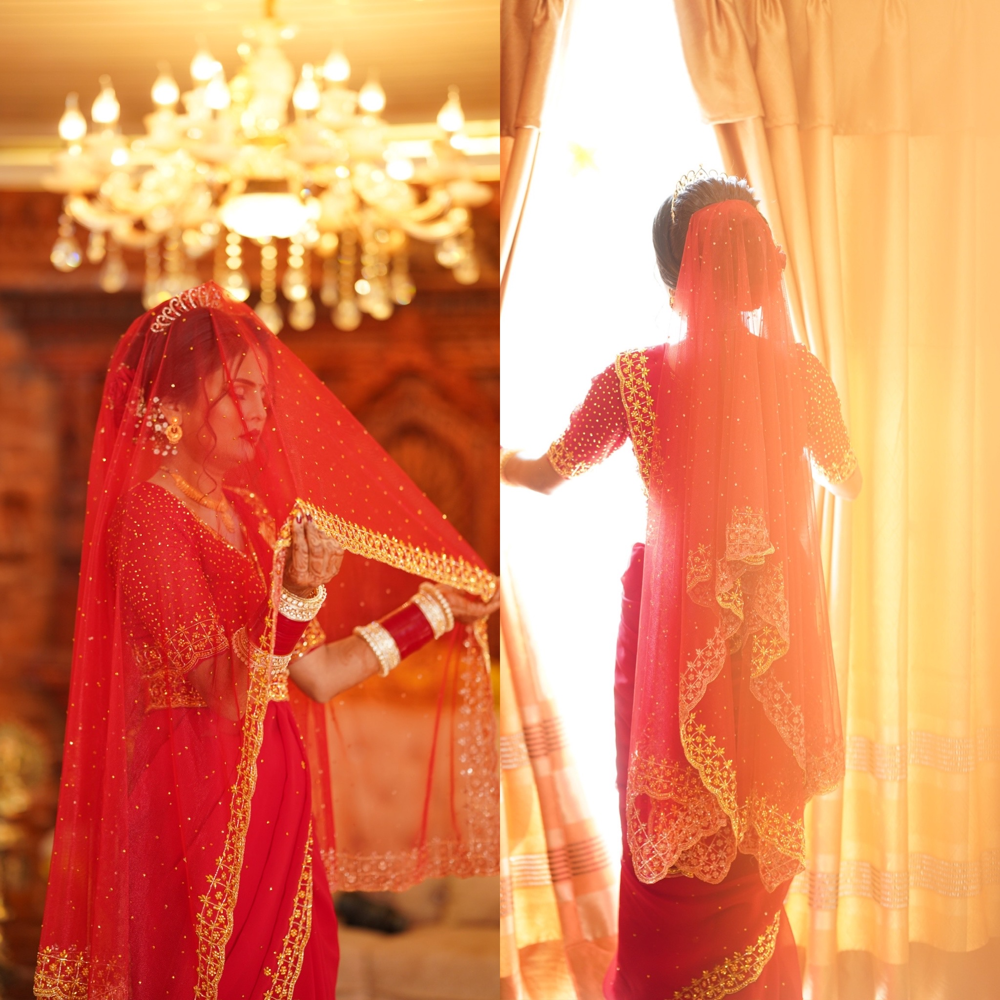

The Rise of Drone Videography in 2025

In 2025, drone videography has evolved from a niche tool to a cornerstone of cinematic storytelling. At Pana Production, we embrace this aerial revolution, capturing breathtaking perspectives that elevate every frame. From sweeping landscapes to intimate moments, drones offer a dynamic lens through which we tell your story.
1. Cinematic Perspectives, Elevated
Drones provide unparalleled aerial views, transforming ordinary scenes into cinematic masterpieces. Whether it's a wedding procession winding through the hills of Nepal or a commercial shoot showcasing architectural grandeur, drones add depth and drama that ground-based cameras simply can't match.

2. Advanced Technology for Precision
Modern drones are equipped with cutting-edge technology, including AI-powered stabilization, real-time tracking, and obstacle avoidance. These advancements ensure smooth, cinematic footage even in challenging environments, allowing us to capture your story with precision and clarity.

3. Accessibility Meets Professional Quality
Once reserved for high-budget productions, drones are now accessible to creators at all levels. With user-friendly interfaces and compact designs, even smaller production teams can achieve professional-quality aerial shots, making cinematic storytelling more attainable than ever.

4. Expanding Creative Horizons
Drones open new avenues for creativity. From capturing sweeping landscapes to intricate architectural details, they allow us to explore perspectives that were previously unimaginable. This freedom fosters innovation, enabling us to craft unique narratives that resonate with audiences.
5. Environmental and Cultural Storytelling
Beyond aesthetics, drones offer a powerful tool for environmental and cultural storytelling. They provide a means to document and share the beauty of our surroundings, raising awareness and appreciation for the world we inhabit.
In 2025, drone videography isn't just a trend—it's a transformative tool that redefines how we capture and share stories, offering new dimensions of creativity and connection.